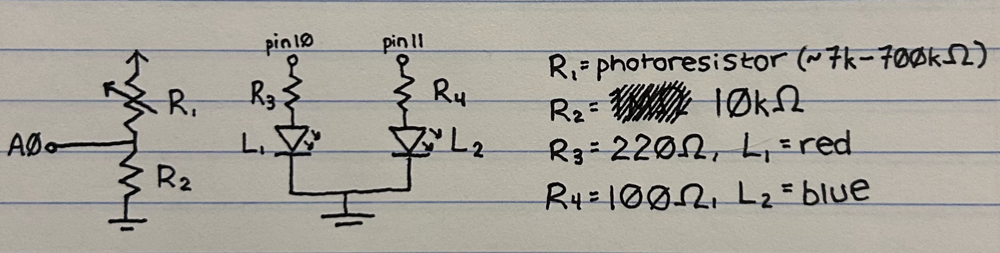
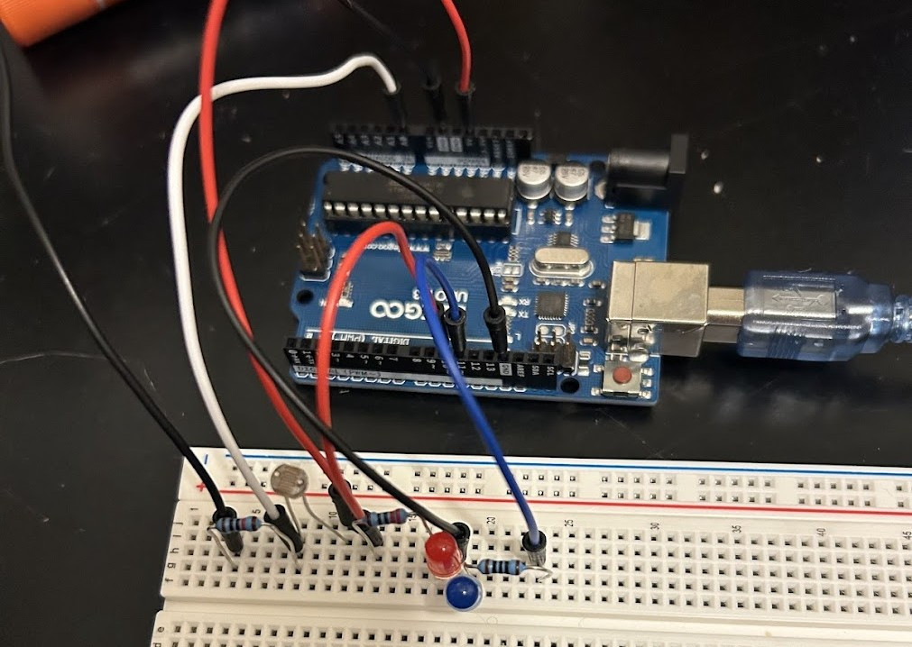
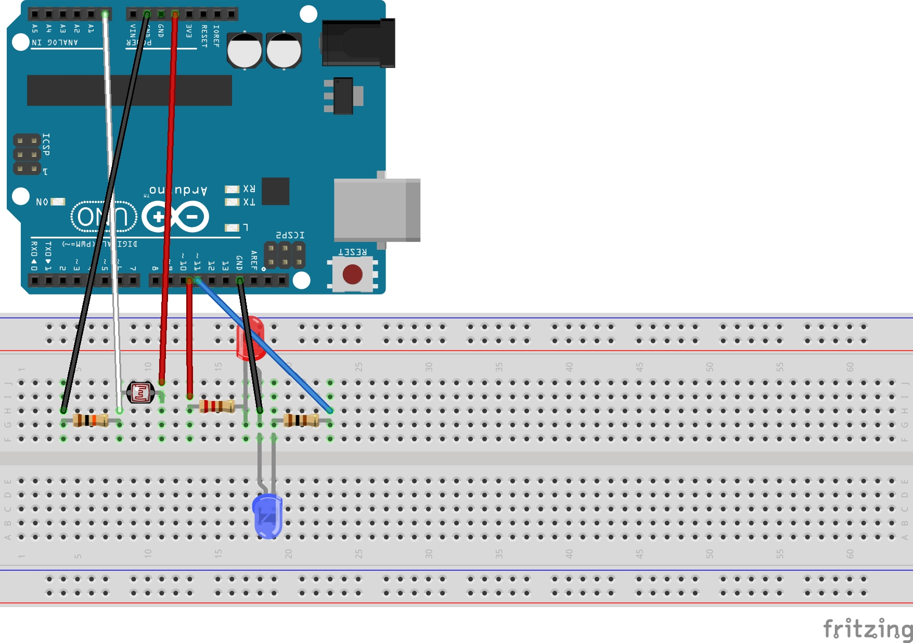
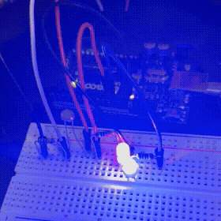
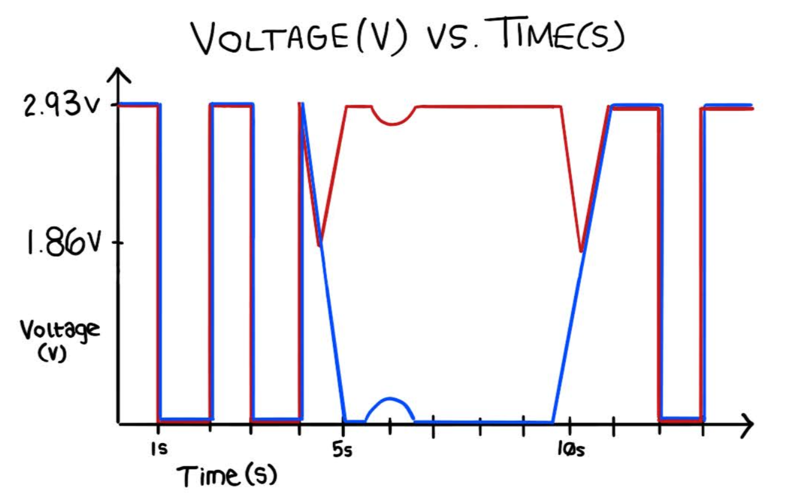

Here is where all the documentation for Assignment 3: Input Output!
The prompt is to use the following:

I used a voltage divider with a photoresistor as R1. The purpose of this voltage divider is to scale down the input voltage into a lower output voltage to be read by the analog-to-digital converter (A0). When testing the resistance of the photoresistor with a multimeter, it produces between 7k and 700k ohms of resistance. For R2, I initially chose 1M ohms due to the usual technique of rounding up when choosing a resistor. However, after testing this, I realized it made the voltage far too high at the measuring point, so I replaced it with a 10k ohm resistor, which worked perfectly. The reason this happened is due to the proportional effects of having a larger R2 value in the voltage divider equation, since R2 is the numerator. Also, when R2 is much higher than R1, it will resist more current, leaving more at the measuring point. The water flow metaphor makes a lot of sense here! Next, for my output, I wired one red LED and one blue LED to individual PWM pins (10 & 11). By using PWM pins, I can use analogWrite() to fade the lights. I used a 220ohm resistor for red, and 100ohm resistor for blue based on their respective voltage drops and Ohms law. (5V-1.8V(red)=0.02A*R; and 5V-3.3V(blue)=0.02A*R; rounding up based on available resistors & to avoid excess current that could damage the LEDs). Lastly, I connected both LEDs to the same ground for simplicity and practicality.


On my breadboard, I use color-coordinated wires to connect the resistors of both LEDs to their respective PWM pins (10 & 11). The resistors are connected to their LEDs, then both LEDs are connected to the same ground wire (black). For the voltage divider, I connect 5V (red) to the photoresistor. Next, I connect a wire (white) from the photoresistor to A0 to read the voltage at this point with analogRead(). Then, I connect the second resistor (R2) to this wire and the photoresistor in order to create the voltage divider. Lastly, I connect the end of the second resistor to ground with a black wire.
// constant variables for pin numbers (unchanging)
const int sensorPin = A0;
const int redLedPin = 10;
const int blueLedPin = 11;
void setup() {
// setup both redLedPin and blueLedPin as output
pinMode(redLedPin, OUTPUT);
pinMode(blueLedPin, OUTPUT);
// begin serial communication
Serial.begin(9600);
}
// variables to track the raw sensor value and mapped value
int sensorVal;
int mappedVal;
void loop() {
// read sensor value through serial pin
sensorVal = analogRead(sensorPin);
// print sensor value to serial monitor
Serial.print(sensorVal);
// constrain sensor value to average range
sensorVal = constrain(sensorVal, 175, 600);
// map sensor value to PWM range
mappedVal = map(sensorVal, 175, 600, 0, 255);
// print mapped value to serial monitor
Serial.print("\t Mapped Value:");
Serial.print(mappedVal);
// if mapped value is above half, use value for PWM of both LEDs and blink on/off every second.
// if mapped value is below half, use value for blue LED and use inverse of value for red.
// when mapped value is below half, this causes the blue LED to fade to dim/off while red is brightened.
if (mappedVal > 127) {
analogWrite(blueLedPin, mappedVal);
analogWrite(redLedPin, mappedVal);
delay(1000);
analogWrite(blueLedPin, 0);
analogWrite(redLedPin, 0);
delay(1000);
// print to serial monitor to more easily track which condition is being executed
Serial.println("\t above half");
} else {
analogWrite(blueLedPin, mappedVal);
analogWrite(redLedPin, 255-mappedVal);
// print to serial monitor to more easily track which condition is being executed
Serial.println("\t below half");
}
}
In my code, I first assign constant variables to the pin numbers of both LEDs and the measuring point of the voltage divider. I use constants because these won't change. Next, I set up my LEDs as outputs, and begin serial communication at 9600 baud. I use 9600 as it's the default for Arduino, and both fast and legible. Next, I initialize the variable sensorVal to store the sensor reading through the analog-to-digital converter, and mappedVal to store the value once its been mapped to the PWM range. Then, in my loop() function, I start by reading the value of the sensor through the ADC and printing it to the serial monitor for tracking and debugging. I then constrain this value to 175-600, which is the average range I noted when running the voltage divider alone, and map it to the PWM range (0-255). I constrain the value to the average range in order to achieve a full range of PWM values once mapped. If I used 0-1023 but never actually read 0 or 1023, the PWM values would never reach 0 or 255. Also, this avoids invalid mapped values outside of the PWM range. Once I have the mapped value, I print it to the serial port for tracking and debugging, then use it to control the LEDs. If the light input is bright, and the value is above half (127), both LEDs will blink on (to the PWM of the mapped value) and off every second. If the light input is dark, and the value is below half, the blue LED will dim with the mapped value while the red LED brightens inversely. I also print the status (above half or below half) to the serial port to more easily track which condition is being executed. Note: the choices of Serial.print vs Serial.println and "\t" are for clear formatting in the serial monitor.

1: In your voltage divider, can the variable resistor be either R1 or R2 or does it need to be one or the other? Justify your answer with example calculations.
The variable resistor could be either R1 or R2, but it would change the proportional effect on the voltage at the measuring point. For example, if R2 is the variable resistor, R1 = 220ohms, and R2 = 100ohms, Vout would be 100(Vin)/320. Increasing the variable resistor to 600ohms, Vout would be 600(Vin)/320. If R1 is the variable resistor, R1 = 100ohms, and R2 = 220ohms, Vout would be 220(Vin)/320. Increasing the variable resistor to 600ohms, Vout would be 220(Vin)/820. When the variable resistor is R2, increasing the resistance increases the voltage at the measuring point. When the variable resistor is R1, increasing the resistance decreases the voltage at the measuring point.
2: Draw a graph where the x-axis is time and the y-axis is voltage. Plot the voltage at V-measure of your voltage divider of your shared gif.

When the sensor is recieving full light (the LEDs are flashing and the PWM is around 255), the ADC reads between 580-600. This corresponds to a voltage of about 2.83-2.93V at V-measure. When the sensor is partially covered (the LEDs start dimming/brightening inversely and the PWM is just below half), the ADC reads between 360-380. This corresponds to a voltage of about 1.76-1.86V at V-measure. When the sensor is fully covered (the LEDs are at their dimmest/brightest inversely and the PWM is almost 0), the ADC reads between 0-20. This corresponds to a voltage of about 0-0.1V at V-measure. The formula I used to calculate voltage from the ADC reading is: Vmeasure = (ADC*5V)/1023, which I found here.
3: AnalogWrite and analogRead are respectively 8-bit and 10-bit values. Imagine you had 10-bit PWM and a 16-bit analog-to-digital converter instead. How would this change your map() code? Explain your answer.
If the PWM was 10-bit, going up to 1023, and the analog-to-digital converter was 16-bit, going up to 65535, my map() function would be changed to: map(sensorVal, 0, 65525, 0, 1023). It's also worth noting that the 0-65525 range would preferably be constrained to the actual range of values read by the sensor, similarly to how my original map() function uses a range of 175-600 instead of 0-1023 based on the actual range of values read by the sensor.